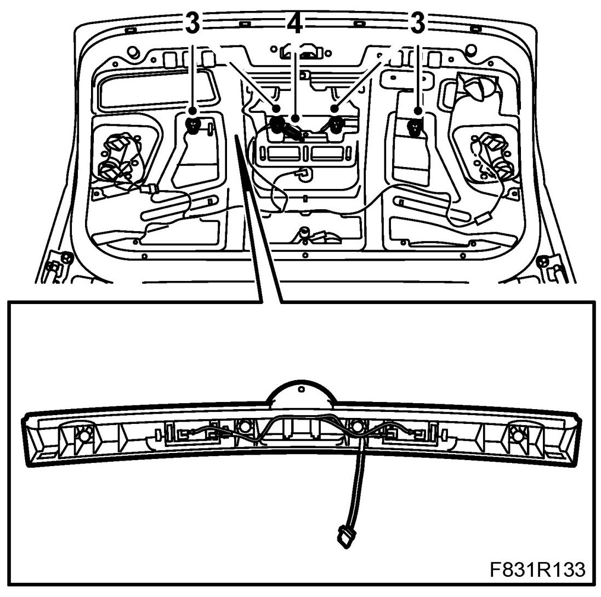
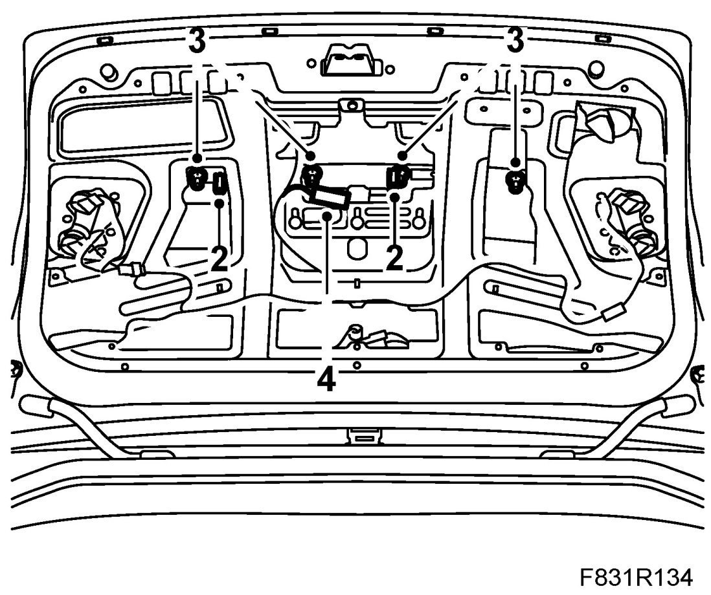

Bootlid Opening Handle, CV
Bootlid Opening Handle, CV
To remove
1. Open the boot lid.
2. Remove the bootlid trim.
3. Remove the nuts to the handle.

4. Unplug the connector.
5. Loosen the tail light nuts. Loosen the tail lights so that the opening handle can be removed.
6. Remove the handle.
To fit
1. Insert the cable through the middle hole.
2. Guide the handle into place using the locating pins.

3. Fit the nuts.
4. Plug in the connector.
5. Fit the tail lamp nuts.
6. Fit the boot lid trim.